Quadrotor UAV — Assembly-Level Structural FEA
From CAD assembly to a validated structural baseline: mixed-dimensional FE modelling, seven static flight-load cases, and analytical verification of the arm load path against MSC PATRAN section resultants.
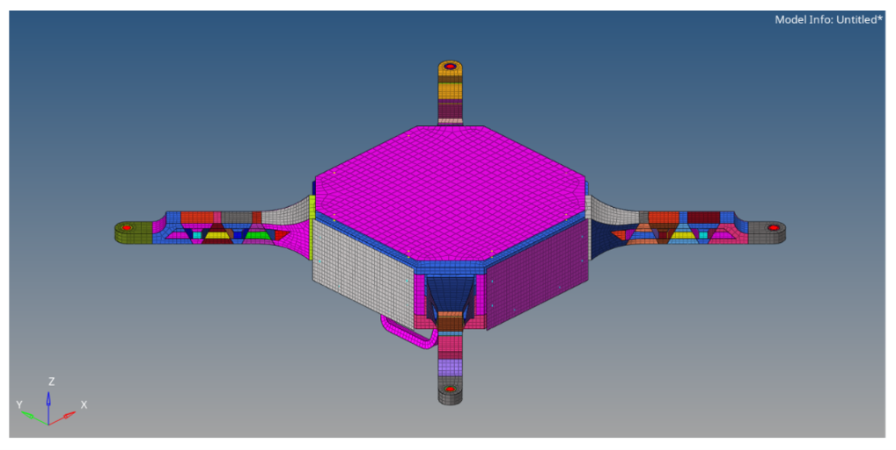
Can the assembly model reproduce the expected arm load path?
This independent portfolio study builds a quadrotor UAV assembly in CATIA V5, idealises it for structural analysis, applies a representative static flight-load envelope, and validates hover arm section loads against independent calculations. Dimensions and material properties are stated engineering assumptions for portfolio demonstration—not certified production data.
Model the structure that carries the load
The four-arm assembly includes the central frame, cover plates, controller mass, propulsion masses, arm interfaces and landing gear. Non-critical manufacturing detail is simplified while preserving geometry that affects global stiffness, mass distribution and load transfer.
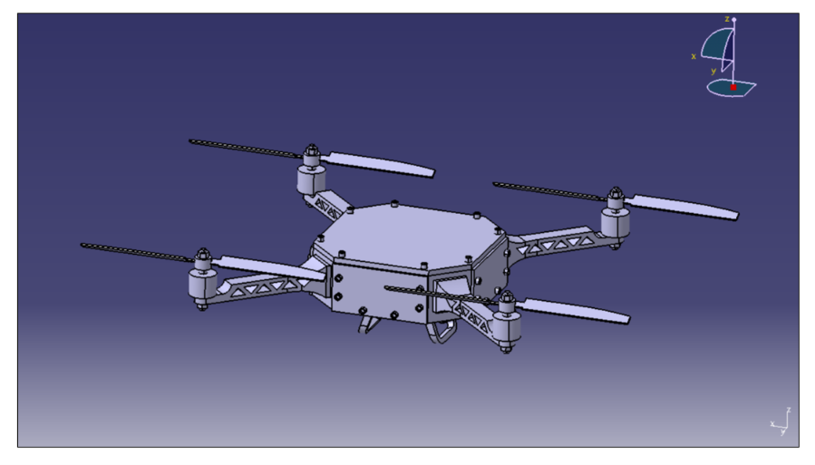
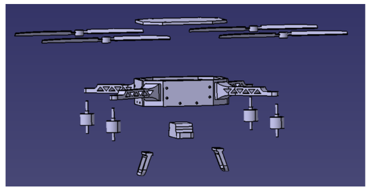
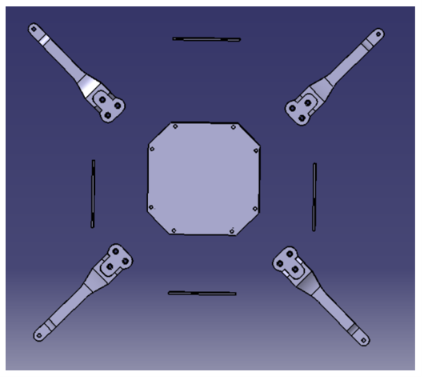
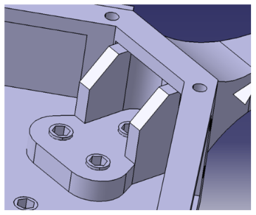
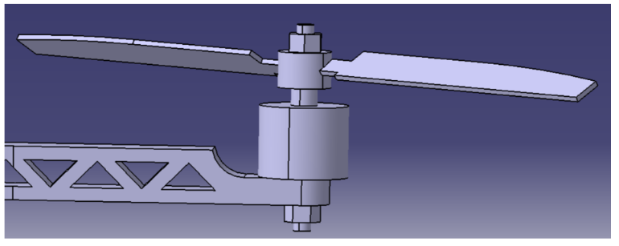
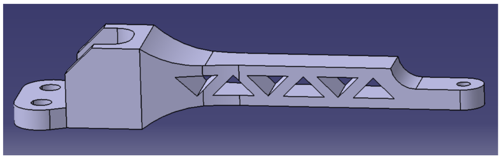
A mixed-dimensional model, matched to the physics
The model uses shells for thin-walled structure and composite arm regions, solids at local load-introduction regions, and 1D/RBE idealisations for fasteners, joints and mass distribution. Motor/propeller and controller hardware are represented by concentrated masses rather than detailed structural meshes.
CAD preparation
Define the assembly and retain key load-path geometry in CATIA V5.
FE idealisation
Assign shell, solid, PCOMP, CBEAM, RBE2/RBE3 and CONM2 representations.
Load envelope
Define hover, vertical/lateral/forward manoeuvres, yaw, thrust imbalance and extreme-G cases.
Verification
Compare analytical arm section forces and moments with PATRAN resultants.
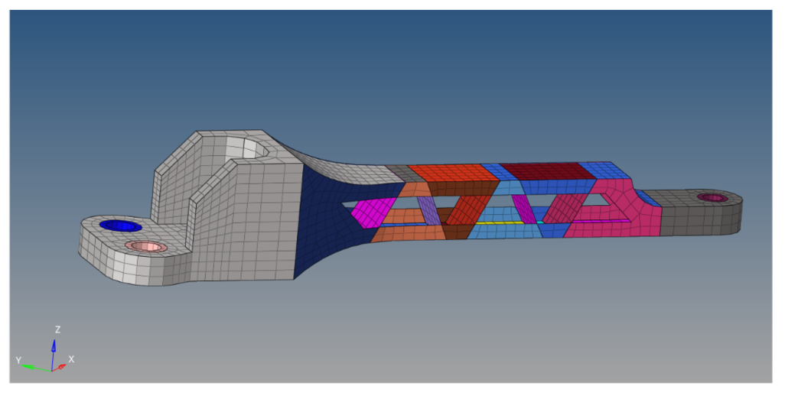
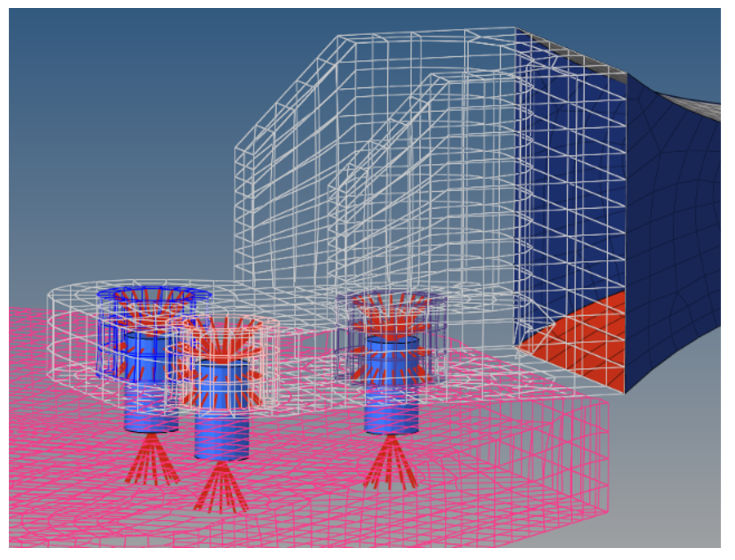
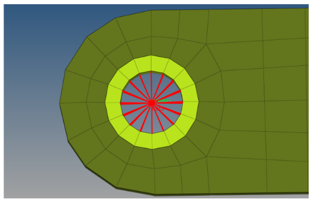
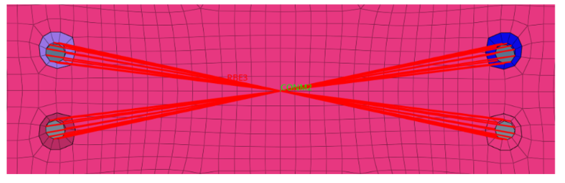
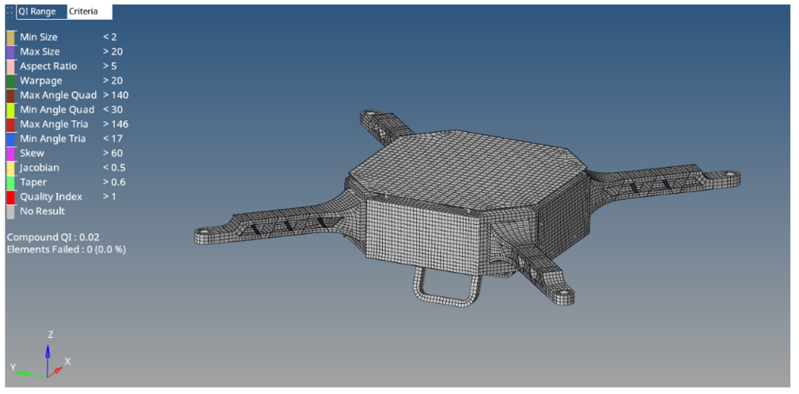
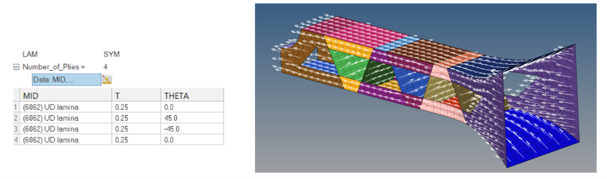
Seven cases to probe different load paths
LC1 — Hover
Baseline balanced thrust and gravity; selected as the reference case for validation.
Model mass: 10.71654 kg
Weight: 105.1293 N
Thrust per motor: 26.2823 N
LC2 — Vertical manoeuvre
Approximately 2g total-thrust condition, with gravity retained.
Thrust per motor: ≈52.56 N
Total thrust: ≈210.25 N
LC3 — Lateral manoeuvre
Represents a 2g lateral acceleration while maintaining altitude. The thrust vector is resolved into lateral and vertical components to represent the already-banked condition.
Lateral force: 210.2586 N
Resultant thrust: ≈235.08 N
Vector angle: 63.43°
Thrust per motor: ≈58.77 N
LC4 — Forward manoeuvre
Represents a 3g forward acceleration while maintaining altitude. Resolved thrust vectors represent the already-pitched condition.
Forward force: 315.39 N
Resultant thrust: ≈332.45 N
Vector angle: 71.57°
Thrust per motor: ≈83.11 N
LC5 — Yaw motion
Opposing reaction torques from the CW and CCW propeller groups generate a net yaw moment. Torque values use the report's stated thrust/torque scaling assumption.
Lower torque level: ≈582.7 N·mm per motor
Higher torque level: ≈971.2 N·mm per motor
Net yaw moment: ≈777.0 N·mm
LC6 — Thrust imbalance
One motor is reduced by 25% from hover thrust while the other three remain at hover thrust, introducing an off-centre roll/pitch moment.
Affected motor: 19.712 N
Other motors: 26.283 N each
Total thrust: 98.560 N
Hover-thrust deficit: 6.571 N
M_ X, motor : -1892.92 N·mm
M_ Y, motor : -1892.99 N·mm
LC7 — Extreme G
Highest vertical-G envelope in this baseline assessment; approximately 3× hover thrust per motor, with gravity retained.
Thrust per motor: ≈78.85 N
Total thrust: ≈315.39 N
Load-case input summary
The table consolidates the load definitions and values reported for LC1–LC7.
| Case | Condition | Reported load definition / key values | Purpose |
|---|---|---|---|
| LC1 | Hover | Mass 10.71654 kg; weight 105.1293 N; 26.2823 N/motor; total thrust ≈105.13 N | Balanced baseline; analytical validation |
| LC2 | Vertical manoeuvre | ≈52.56 N/motor; total thrust ≈210.25 N; approximately 2g total-thrust condition | Higher vertical load |
| LC3 | Lateral manoeuvre | 2g lateral acceleration; lateral force 210.2586 N; resultant thrust ≈235.08 N; 63.43° vector angle; ≈58.77 N/motor | Lateral load path |
| LC4 | Forward manoeuvre | 3g forward acceleration; forward force 315.39 N; resultant thrust ≈332.45 N; 71.57° vector angle; ≈83.11 N/motor | Forward load path |
| LC5 | Yaw motion | Lower torque ≈582.7 N·mm/motor; higher torque ≈971.2 N·mm/motor; net yaw moment ≈777.0 N·mm | Torsional/joint response |
| LC6 | Thrust imbalance | Affected motor 19.712 N; other three 26.283 N each; total 98.560 N; deficit 6.571 N, M_ X, motor ≈ -1892.92 N·mm, M_ Y, motor ≈ -1892.99 N·mm | Asymmetric roll/pitch moment |
| LC7 | Extreme G | ≈78.85 N/motor; total thrust ≈315.39 N; gravity retained | Governing vertical-G envelope |
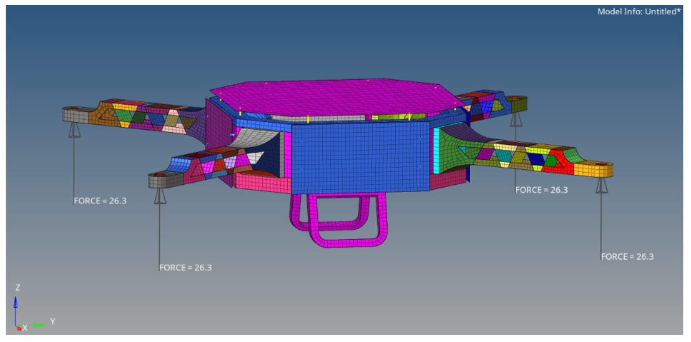
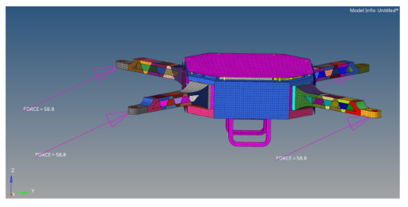
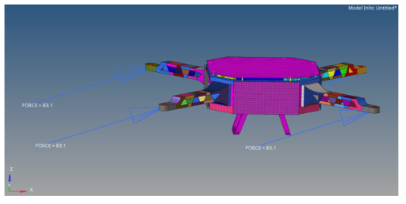
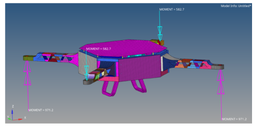
Check the answer against an independent load calculation
For LC1, six sections along one arm were checked using three-dimensional load-point offsets. Analytical shear force, bending moment and torsional moment were compared with PATRAN section resultants. Bending-moment magnitudes were compared because the analytical and PATRAN sign conventions differ.
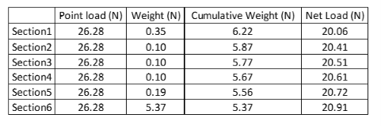
| Validation quantity | Reported agreement | Interpretation |
|---|---|---|
| Shear force | 0.13% max discrepancy | Close agreement at the six arm sections. |
| Bending moment | 2.58% max magnitude discrepancy | Analytical and FE section-resultant magnitudes track consistently. |
| Torsional moment | 5.96 N·mm max absolute difference | Torsion is negligible compared with bending moment in LC1. |
SFD, BMD and TMD — analytical vs PATRAN comparison
The graphs compare the analytical arm-section calculations with the MSC PATRAN/NASTRAN section resultants at the same six stations. Bending-moment magnitudes are compared because the report notes opposite sign conventions; TMD is projected onto the arm longitudinal axis.
| Comparison | Trend / agreement reported | Engineering interpretation |
|---|---|---|
| SFD — shear force | Analytical values are approximately 20.06–20.91 N; maximum discrepancy 0.13%. | Very close agreement across the six arm sections supports the global shear-load transfer. |
| BMD — bending moment | Maximum magnitude discrepancy 2.58%; bending moment decreases toward the motor end. | Analytical and FE bending-moment magnitudes follow the same spanwise trend. |
| TMD — torsional moment | Maximum absolute difference 5.96 N·mm; analytical maximum magnitude approximately 2.98 N·mm. | Torsion is negligible compared with bending moments on the order of several thousand N·mm. |

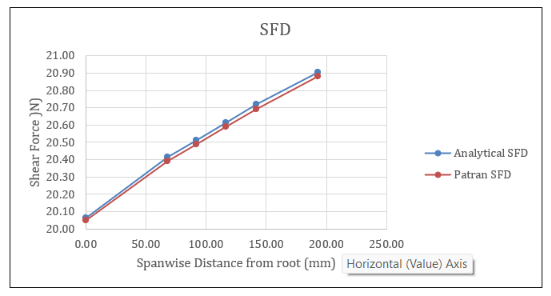

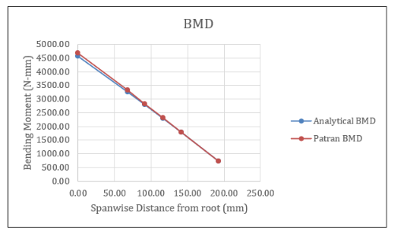

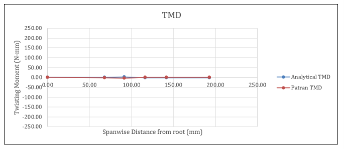
Response across all seven load cases
The report's all-case interpretation is summarised below before identifying the governing case. The qualitative comparisons below follow its reported findings.

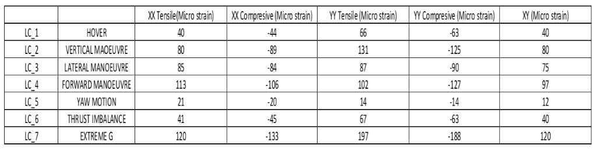
| Load case | Reported response summary |
|---|---|
| LC1 — Hover | Baseline response; used for analytical load-path validation. |
| LC2 — Vertical manoeuvre | Approximately twice the LC1 displacement/stress response, consistent with increased vertical thrust. |
| LC3 — Lateral manoeuvre | Higher response than hover due to the added lateral load component, while remaining below LC2 and LC7. |
| LC4 — Forward manoeuvre | Forward thrust-vector component increases structural demand relative to hover. |
| LC5 — Yaw motion | Lowest global displacement/stress; response is dominated by torsional and joint load paths. |
| LC6 — Thrust imbalance | Asymmetric motor loading introduces a roll/pitch moment and increases response over hover. |
| LC7 — Extreme G | Governing baseline case for displacement, aluminium von Mises stress and composite failure index. |
LC7 — Extreme G governs the reported response
Among the seven static cases, LC7 produced the highest reported displacement, aluminium von Mises stress and composite failure index. The governing values are shown below.
| Metric | Governing result |
|---|---|
| Maximum displacement | 0.5030 mm |
| Maximum aluminium von Mises stress | 20.1549 MPa |
| Maximum composite failure index | 0.0294 |
| Maximum tensile strain, XX | 120 µε |
| Maximum compressive strain, XX | −133 µε |
| Maximum tensile strain, YY | 197 µε |
| Maximum compressive strain, YY | -188 µε |
| Maximum tensile strain, XY | 120 µε |
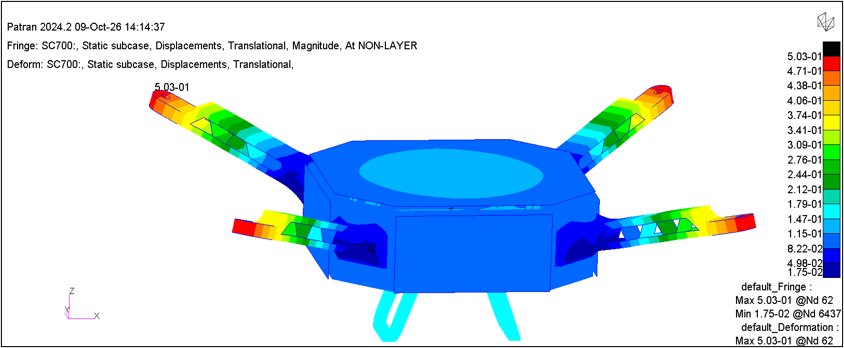
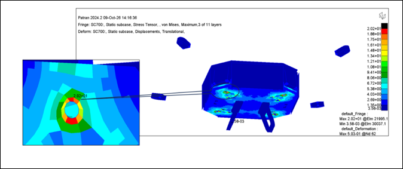
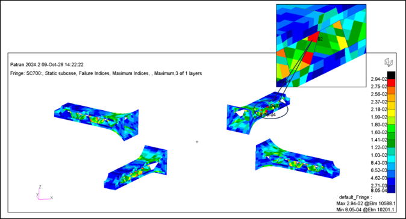
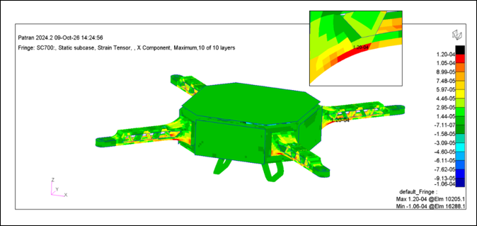
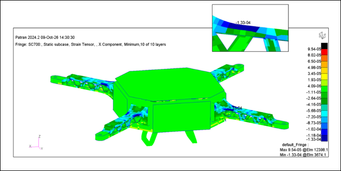
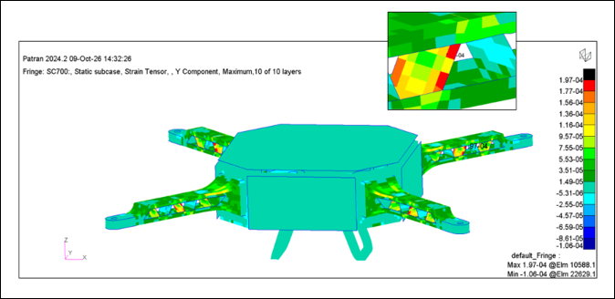
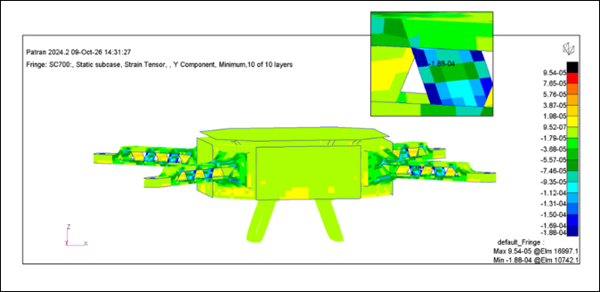
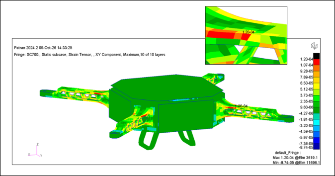
A validated static baseline for the next studies
Project 4 establishes the assembly-level baseline and checks its global arm load path. The planned continuation is normal-mode and linear-buckling analysis in Project 5, followed by structural weight/thickness optimisation in Project 6.
Portfolio study note: UAV dimensions and material properties are engineering assumptions selected for this independent case study, not certified specifications.